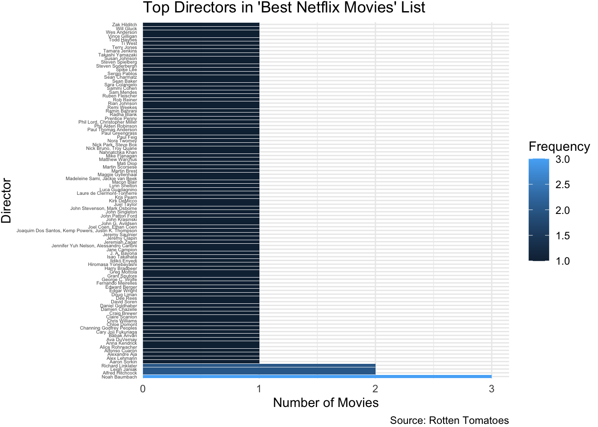

library(tidycensus)
library(tidyverse)
library(dplyr)
library(ggplot2)
library(lubridate)
library(purrr)
library(sf)
census_api_key("9d5d2ec5ead1cb2d84a9499115e07a1b27dec01c")Project 2
Group members: Xintong Li (xli355@jh.edu, JHED ID: xli355), Roujin An (ran8@jhmi.edu, JHED ID: ran8)
Part 1
1.1 Question to be answered
Question: How do median household income, poverty rates, and educational attainment (college graduation rates) vary across different states in the U.S. in 2020?
Visualization: we will visualize with a bar chart to display median household income by state, highlighting economic disparities. A scatter plot with a regression line will be visualized to examine the relationship between poverty rates and college graduation rate, revealing potential correlations. Finally, a choropleth map (geom_sf()) will visualize college graduation rates geographically, showcasing educational attainment differences across states.
1.2 Data extraction
# Median Household Income
income_data <- get_acs(
geography = "state",
variables = "B19013_001",
year = 2020,
survey = "acs5"
)Getting data from the 2016-2020 5-year ACS#Save data locally
write_csv(income_data, "income_data.csv")
# Poverty Data
poverty_data <- get_acs(
geography = "state",
variables = "B17001_002",
year = 2020,
survey = "acs5"
)Getting data from the 2016-2020 5-year ACS#Save data locally
write_csv(poverty_data, "poverty_data.csv")
# education
education_college <- get_acs(
geography = "state",
variables = "B15003_022", # Bachelor's degree
year = 2020,
survey = "acs5"
)Getting data from the 2016-2020 5-year ACS#Save data locally
write_csv(education_college, "education_college.csv")
# Total Population for Poverty Rate
total_population <- get_acs(
geography = "state",
variables = "B01003_001", # Total population
year = 2020,
survey = "acs5"
)Getting data from the 2016-2020 5-year ACS#Save data locally
write_csv(total_population, "total_population.csv")
# Total Population 25+ for Education Rate
total_adult_population <- get_acs(
geography = "state",
variables = "B15003_001", # Total population aged 25+
year = 2020,
survey = "acs5"
)Getting data from the 2016-2020 5-year ACS#Save data locally
write_csv(total_adult_population, "total_adult_population.csv")
head(income_data)# A tibble: 6 × 5
GEOID NAME variable estimate moe
<chr> <chr> <chr> <dbl> <dbl>
1 01 Alabama B19013_001 52035 377
2 02 Alaska B19013_001 77790 1134
3 04 Arizona B19013_001 61529 286
4 05 Arkansas B19013_001 49475 431
5 06 California B19013_001 78672 270
6 08 Colorado B19013_001 75231 379head(poverty_data)# A tibble: 6 × 5
GEOID NAME variable estimate moe
<chr> <chr> <chr> <dbl> <dbl>
1 01 Alabama B17001_002 762642 11016
2 02 Alaska B17001_002 74369 3007
3 04 Arizona B17001_002 990528 12842
4 05 Arkansas B17001_002 470190 8038
5 06 California B17001_002 4853434 39919
6 08 Colorado B17001_002 544232 9500head(education_college)# A tibble: 6 × 5
GEOID NAME variable estimate moe
<chr> <chr> <chr> <dbl> <dbl>
1 01 Alabama B15003_022 546674 6282
2 02 Alaska B15003_022 90161 2021
3 04 Arizona B15003_022 911228 8067
4 05 Arkansas B15003_022 308648 5611
5 06 California B15003_022 5764827 21887
6 08 Colorado B15003_022 1015989 7701head(total_population)# A tibble: 6 × 5
GEOID NAME variable estimate moe
<chr> <chr> <chr> <dbl> <dbl>
1 01 Alabama B01003_001 4893186 NA
2 02 Alaska B01003_001 736990 NA
3 04 Arizona B01003_001 7174064 NA
4 05 Arkansas B01003_001 3011873 NA
5 06 California B01003_001 39346023 NA
6 08 Colorado B01003_001 5684926 NAhead(total_adult_population)# A tibble: 6 × 5
GEOID NAME variable estimate moe
<chr> <chr> <chr> <dbl> <dbl>
1 01 Alabama B15003_001 3344006 1279
2 02 Alaska B15003_001 483436 429
3 04 Arizona B15003_001 4846056 558
4 05 Arkansas B15003_001 2026722 1113
5 06 California B15003_001 26665143 1135
6 08 Colorado B15003_001 3900754 10461.3 Data cleaning
# remove unwanted column such as moe
income_data_clean <- income_data %>%
select(GEOID, NAME, income = estimate)
poverty_data_clean <- poverty_data %>%
select(GEOID, NAME, poverty = estimate)
education_data_clean <- education_college %>%
select(GEOID, NAME, education_college = estimate)
total_population_clean <- total_population %>%
select(GEOID, NAME, total_population = estimate)
adult_population_clean <- total_adult_population %>%
select(GEOID, NAME, adult_population = estimate)
# combining data
combined_data <- income_data_clean %>%
left_join(poverty_data_clean, by = c("GEOID", "NAME")) %>%
left_join(education_data_clean, by = c("GEOID", "NAME")) %>%
left_join(total_population_clean, by = c("GEOID", "NAME")) %>%
left_join(adult_population_clean, by = c("GEOID", "NAME"))
head(combined_data)# A tibble: 6 × 7
GEOID NAME income poverty education_college total_population adult_population
<chr> <chr> <dbl> <dbl> <dbl> <dbl> <dbl>
1 01 Alab… 52035 762642 546674 4893186 3344006
2 02 Alas… 77790 74369 90161 736990 483436
3 04 Ariz… 61529 990528 911228 7174064 4846056
4 05 Arka… 49475 470190 308648 3011873 2026722
5 06 Cali… 78672 4853434 5764827 39346023 26665143
6 08 Colo… 75231 544232 1015989 5684926 3900754# calculating rate of poverty and education in each state
combined_data <- combined_data %>%
mutate(
poverty_rate = (poverty / total_population) * 100,
college_grad_rate = (education_college / adult_population) * 100
)
head(combined_data)# A tibble: 6 × 9
GEOID NAME income poverty education_college total_population adult_population
<chr> <chr> <dbl> <dbl> <dbl> <dbl> <dbl>
1 01 Alab… 52035 762642 546674 4893186 3344006
2 02 Alas… 77790 74369 90161 736990 483436
3 04 Ariz… 61529 990528 911228 7174064 4846056
4 05 Arka… 49475 470190 308648 3011873 2026722
5 06 Cali… 78672 4853434 5764827 39346023 26665143
6 08 Colo… 75231 544232 1015989 5684926 3900754
# ℹ 2 more variables: poverty_rate <dbl>, college_grad_rate <dbl># purrr function one: pmap_chr(): to group states into the following categories: high poverty low education; and low poverty high income; high poverty and high income; low poverty and low income
combined_data <- combined_data %>%
mutate(socioeconomic_category = pmap_chr(
list(poverty_rate, college_grad_rate, income),
~ case_when(
..1 > 20 & ..3 > 60000 ~ "High Poverty, High Income", # New Category 1
..1 < 10 & ..3 < 60000 ~ "Low Poverty, Low Income", # New Category 2
..1 > 20 & ..2 < 30 ~ "High Poverty, Low Education", # Pre-existing Category
..1 < 10 & ..3 > 60000 ~ "Low Poverty, High Income", # Pre-existing Category
TRUE ~ "Other States" # Default
)
))
# Check the number of states in each category
table(combined_data$socioeconomic_category)
High Poverty, Low Education Low Poverty, High Income
1 11
Other States
40 # Group by socioeconomic category and list states in each category
state_categories <- combined_data %>%
group_by(socioeconomic_category) %>%
summarize(states = paste(NAME, collapse = ", "), .groups = 'drop')
# Print the resulting data frame
print(state_categories)# A tibble: 3 × 2
socioeconomic_category states
<chr> <chr>
1 High Poverty, Low Education Puerto Rico
2 Low Poverty, High Income Colorado, Connecticut, Hawaii, Maryland, Massachu…
3 Other States Alabama, Alaska, Arizona, Arkansas, California, D…# Check the variability of each variable across states
# Normalize selected columns using min-max scaling
normalized_data <- combined_data %>%
select(income, poverty_rate, college_grad_rate) %>%
mutate(across(everything(), ~ (. - min(.)) / (max(.) - min(.))))
# Use imap() to calculate standard deviation on normalized data: the second purrr function
column_variability <- normalized_data %>%
imap(~ tibble(column = .y, std_dev = sd(.x, na.rm = TRUE))) %>%
bind_rows()
# View the results
print(column_variability)# A tibble: 3 × 2
column std_dev
<chr> <dbl>
1 income 0.180
2 poverty_rate 0.140
3 college_grad_rate 0.223# Brief visualization of the raw poverty rate values
# Plot raw poverty rates values for each state using combined_data
ggplot(combined_data, aes(x = reorder(NAME, poverty_rate), y = poverty_rate)) +
geom_point(color = "coral", size = 3) +
coord_flip() +
labs(
title = "Poverty Rates Across States (2020)",
subtitle = "Highlighting disparities in poverty levels by state",
x = "State",
y = "Poverty Rate (%)",
caption = "Source: U.S. Census Bureau, ACS 2020"
) +
theme_minimal() +
theme(axis.text.y = element_text(size = 8)) 1.4 Data visualization
# medium income across states
ggplot(combined_data, aes(x = reorder(NAME, income), y = income)) +
geom_col(fill = "steelblue") +
coord_flip() +
labs(title = "Median Household Income by State (2020)",
subtitle = "Visualizing economic disparities across the United States", # Subtitle
caption = "Source: U.S. Census Bureau, ACS 2020 5-Year Estimates", # Caption
x = "State", y = "Median Income (USD)") +
theme_minimal()+
theme(axis.text.y = element_text(size = 8))# correlation between education and poverty with a regression line
ggplot(combined_data, aes(x = college_grad_rate, y = poverty_rate)) +
geom_point(color = "darkgreen", size = 3) +
geom_smooth(method = "lm", se = FALSE, color = "blue") +
labs(title = "Poverty Rate vs. College Graduation Rate",
subtitle = "States with higher educational attainment tend to have lower poverty rates",
caption = "Source: U.S. Census Bureau, ACS 2020 5-Year Estimates",
x = "College Graduation Rate (%)", y = "Poverty Rate (%)") +
theme_minimal()+
theme(plot.subtitle = element_text(size = 8, face = "italic"))`geom_smooth()` using formula = 'y ~ x'# Get state geometries (GEOID + geometry)
state_geometries <- get_acs(
geography = "state",
variables = "B19013_001", # Any variable; we only need GEOID + geometry
year = 2020,
geometry = TRUE
) %>%
select(GEOID, geometry) # Keep only GEOID and geometry columns
write_csv(state_geometries, 'state_geometries.csv')
combined_data_with_geometry <- combined_data %>%
left_join(state_geometries, by = "GEOID")
names(combined_data_with_geometry)
# Convert combined_data_with_geometry to an sf object
combined_data_with_geometry <- st_as_sf(combined_data_with_geometry)#Plotting with goem_sf()
ggplot(combined_data_with_geometry, aes(fill = college_grad_rate)) +
geom_sf(color = "white", size = 0.1) + # Thin border for focus on map
scale_fill_viridis_c(direction = -1) + # Reverse the color scale
labs(
title = "College Graduation Rates by State (2020)",
subtitle = "Highlighting educational attainment disparities across the U.S.",
caption = "Source: U.S. Census Bureau, ACS 2020 5-Year Estimates",
fill = "Graduation Rate (%)"
) +
theme_minimal() +
theme(
legend.position = "bottom", # Place legend below the plot
legend.key.width = unit(1.5, "cm"), # Reduce legend width
legend.key.height = unit(0.3, "cm"),# Reduce legend height
plot.title = element_text(size = 16, hjust = 0.5, face = "bold"), # Center and bold title
plot.subtitle = element_text(size = 12, hjust = 0.5, face = "italic"), # Center subtitle
plot.caption = element_text(size = 10, hjust = 0), # Align caption to left
axis.text = element_blank(), # Remove axis text for focus on map
panel.grid = element_blank(), # Clean map grid lines
plot.margin = margin(10, 10, 10, 10) # Maximize map area
)1.5 Findings
Function Dictionary
purrr Functions
| Function | Purpose |
|---|---|
pmap_chr() |
Categorized states based on poverty, income, and education by applying a function across multiple columns. |
map_df() or imap() |
Iterated over columns to compute summary statistics (e.g., variability via standard deviation). |
dplyr Functions
| Function | Purpose |
|---|---|
select() |
Selected specific columns for analysis or visualization. |
mutate() |
Created new variables, such as normalized values and socioeconomic categories. |
filter() |
Filtered rows based on specific conditions (e.g., high poverty states). |
summarize() |
Aggregated data to summarize states within each category. |
group_by() |
Grouped data by socioeconomic categories for aggregation. |
bind_cols() |
Combined data frames to reattach normalized columns or summaries. |
arrange() |
Ordered data by specific columns (e.g., poverty rates for plots). |
pivot_longer() |
Transformed wide data into long format for easier comparison and plotting. |
tidyverse General Functions
| Function | Purpose |
|---|---|
read_csv() |
Imported CSV files containing raw data. |
write_csv() |
Saved cleaned or processed data for reproducibility. |
ggplot2 Geom Functions
| Function | Purpose |
|---|---|
geom_point() |
Created scatter plots to visualize relationships (e.g., poverty vs. education rates). |
geom_col() |
Created bar plots for visualizing state-level data like income and variability. |
geom_sf() |
Generated choropleth maps for visualizing geographic distribution of college graduation rates. |
stat_smooth() |
Added regression lines to scatter plots to explore trends in the data. |
In this analysis, we examined the socioeconomic disparities across U.S. states using data from the tidycensus package for the year 2020. Specifically, we focused on median household income, poverty rates, and college graduation rates to explore the relationships and variability among these metrics.
Method Used: To explore variability and disparities across states: we conducted a variation analysis by calculating the standard deviation for each metric (income, poverty, and education). This helped identify which variables showed the greatest disparities. purrr functions were employed to categorize states based on combinations of poverty, income, and education levels, allowing us to label and analyze socioeconomic patterns. We created several plots to communicate key findings. A bar chart displayed median household income by state, highlighting economic disparities. A scatter plot visualized the relationship between poverty rates and college graduation rates, including a regression line to show trends. Lastly, a choropleth map was used to represent college graduation rates by state, with state abbreviations included to enhance interpretability.
Key Findings: The calculated standard deviations revealed that college graduation rates exhibit the highest variability across states (0.223), followed by income (0.180) and poverty rates (0.140).
Poverty and Income Trends: States such as Mississippi and Louisiana show consistently high poverty rates (>20%), whereas states like New Hampshire and Maryland maintain low poverty rates (<10%). Puerto Rico stands out as the only state with severe economic disparities, characterized by both high poverty rate ( > 20% ) and low college graduation rate (< 30%), placing it in the ‘high Poverty, low education’ category.
Correlation Between Education and Poverty: A scatter plot comparing college graduation rates and poverty rates highlighted a negative trend: states with higher education levels tend to have lower poverty rates. For instance, Massachusetts, with a college graduation rate above 45%, has one of the lowest poverty rates, while states like Mississippi show the reverse trend. Data Source Limitations: The analysis relies on the ACS 5-Year Estimates, which are subject to sampling variability. The dataset may not fully capture rapid economic changes, such as those induced by the COVID-19 pandemic in 2020. State-level data may mask regional disparities within states. Urban-rural divides could lead to misinterpretation of overall state metrics.
Part 2
Data Analysis
# load packages
library(dplyr)
library(rvest)
library(ggplot2)
# read the HTML content from the rotten tomatoes webpage: 100 Best Movies on Netflix Ranked by Tomatometer (November 2024)
page <- read_html("https://editorial.rottentomatoes.com/guide/best-netflix-movies-to-watch-right-now/")
# extract director information
director <- page %>%
html_elements(".info.director") %>% # target elements with class ".info.director" containing director info
html_text(trim = TRUE) # trim whitespace
# clean extracted text by removing "Directed By:"
director <- gsub("Directed By:\\s*", "", director)
# convert the cleaned data to a data frame
director <- data.frame(director)
# rename the column to distinguish between column name and data frame name
director <- director %>% rename(director_name = director)
# create a frequency table to count the occurrences of each director
freq <- table(director$director_name)
# convert the frequency table to a data frame so filter() can be applied
freq <- as.data.frame(freq)
# ranked the occurrences of each director by frequency in descending order
ranked_director <- freq %>%
rename(Frequency = Freq, Director_name = Var1) %>%
arrange(desc(Frequency))
ranked_director Director_name Frequency
1 Noah Baumbach 3
2 Alfred Hitchcock 2
3 Leigh Janiak 2
4 Richard Linklater 2
5 Aaron Sorkin 1
6 Alex Lehmann 1
7 Alexandre Aja 1
8 Alfonso Cuarón 1
9 Alice Rohrwacher 1
10 Anna Kendrick 1
11 Ava DuVernay 1
12 Babak Anvari 1
13 Cary Joji Fukunaga 1
14 Channing Godfrey Peoples 1
15 Chloe Domont 1
16 Chris Williams 1
17 Claire Scanlon 1
18 Craig Brewer 1
19 Damien Chazelle 1
20 Daniel Goldhaber 1
21 David Soren 1
22 Dee Rees 1
23 Doug Liman 1
24 Edgar Wright 1
25 Edward Berger 1
26 Fernando Meirelles 1
27 George C. Wolfe 1
28 Grant Sputore 1
29 Greg Mottola 1
30 Harry Bradbeer 1
31 Hiromasa Yonebayashi 1
32 Ildikó Enyedi 1
33 Isao Takahata 1
34 J. A. Bayona 1
35 Jane Campion 1
36 Jennifer Yuh Nelson, Alessandro Carloni 1
37 Jeremiah Zagar 1
38 Jérémy Clapin 1
39 Jeremy Saulnier 1
40 Joaquim Dos Santos, Kemp Powers, Justin K. Thompson 1
41 Joel Coen, Ethan Coen 1
42 John G. Avildsen 1
43 John Krasinski 1
44 John Patton Ford 1
45 John Singleton 1
46 John Stevenson, Mark Osborne 1
47 Juel Taylor 1
48 Kirk DeMicco 1
49 Kris Pearn 1
50 Laure de Clermont-Tonnerre 1
51 Luca Guadagnino 1
52 Lynn Shelton 1
53 Macon Blair 1
54 Madeleine Sami, Jackie van Beek 1
55 Maggie Gyllenhaal 1
56 Martin Brest 1
57 Martin Scorsese 1
58 Mati Diop 1
59 Matthew Warchus 1
60 Mike Flanagan 1
61 Nahnatchka Khan 1
62 Nick Bruno, Troy Quane 1
63 Nick Park, Steve Box 1
64 Nora Twomey 1
65 Paul Feig 1
66 Paul Greengrass 1
67 Paul Thomas Anderson 1
68 Phil Alden Robinson 1
69 Phil Lord, Christopher Miller 1
70 Prentice Penny 1
71 Radha Blank 1
72 Ramin Bahrani 1
73 Remi Weekes 1
74 Rian Johnson 1
75 Rob Reiner 1
76 Ruben Fleischer 1
77 Sam Mendes 1
78 Sammi Cohen 1
79 Sara Colangelo 1
80 Sean Baker 1
81 Sean Charmatz 1
82 Sergio Pablos 1
83 Spike Lee 1
84 Steven Soderbergh 1
85 Steven Spielberg 1
86 Susan Johnson 1
87 Takashi Yamazaki 1
88 Tamara Jenkins 1
89 Terry Jones 1
90 Ti West 1
91 Todd Haynes 1
92 Vince Gilligan 1
93 Wes Anderson 1
94 Will Gluck 1
95 Zak Hilditch 1# bar plot to visualize the frequency
ggplot(ranked_director, aes(x = reorder(Director_name, -Frequency), y = Frequency, fill = Frequency)) +
geom_col() +
coord_flip() +
labs(
title = "Top Directors in 'Best Netflix Movies' List",
x = "Director",
y = "Number of Movies",
caption = "Source: Rotten Tomatoes"
) +
theme_minimal() +
theme(
axis.text.y = element_text(size = 4), # Adjust font size of row label
plot.margin = margin(1, 1, 1, 1)
) +
scale_y_continuous(expand = expansion(mult = c(0, 0.05))) # Correct placement of scale_y_continuous
Summary
We used the rvest package to scrape HTML content from a Rotten Tomatoes webpage listing the “100 Best Movies on Netflix Ranked by Tomatometer.” To extract director information, we utilized html_elements() and html_text(). We then cleaned the extracted text using gsub() to remove the “Directed By:” prefix. The cleaned data was converted into a data frame, and the director column was renamed to distinguish from the name of the data frame. We created a frequency table using table(), converted it to a data frame, and filtered the results to show only rows where director names appeared more than once.
The analysis revealed that among the top 100 movies, Noah Baumbach was the most frequently appearing director, with three films. Alfred Hitchcock, Leigh Janiak, and Richard Linklater followed, each with two movies. All other directors on the list directed one movie each.
An limitation is that new movies may be added or removed from this webpage. My analysis based on a snapshot may not reflect the latest rankings. The structure of the webpage may also change, which could lead to incomplete or incorrect extraction using html_elements(). Furthermore, the analysis only focuses on the frequency of directors’ appearances without accounting for qualitative factors, such as the genres, styles, and cultural impacts of the movies.